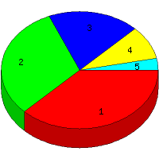

Week of 11/15/2009 to 11/21/2009: Top
5 of
5 File Types (Extensions)
Sorted by Access Count
Individual file types as determined by file extensions. All URLs that
do not contain an extension are counted as directories.

| Rank |
Type |
Accesses |
% |
Bytes |
% |
| 1 |
jpg
|
46 |
37.70 |
1,921,483 |
85.73 |
| 2 |
htm
|
38 |
31.15 |
131,655 |
5.87 |
| 3 |
Directory (folder)
|
23 |
18.85 |
60,375 |
2.69 |
| 4 |
gif
|
11 |
9.02 |
126,784 |
5.66 |
| 5 |
css
|
4 |
3.28 |
1,040 |
0.05 |